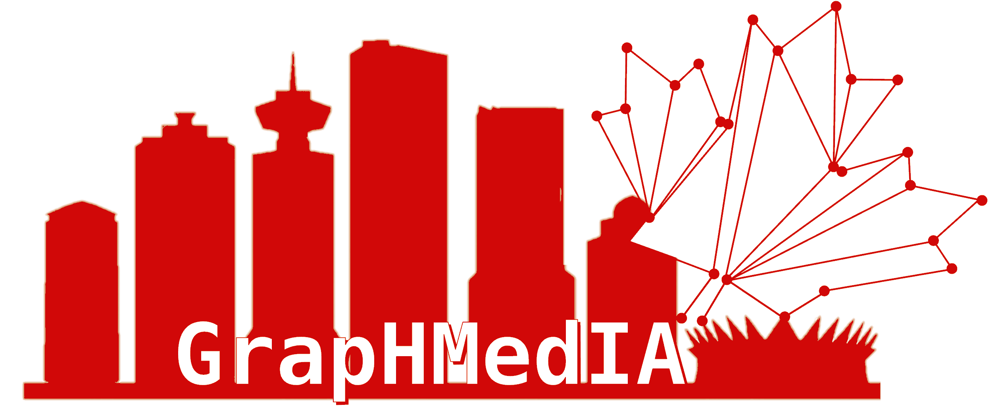

Overview
Graphs and hypergraphs have been increasingly used in medical image analysis due to their ability to represent complex relationships and interactions between different elements of an image. In medical images, different anatomical structures, physiological functions, and pathological conditions are interconnected in intricate ways. Graph-based approaches allow for the efficient representation and analysis of these interconnections, providing a powerful tool for understanding the structure and function of the human body. Hypergraphs extend the graph framework by allowing for the representation of higher-order interactions between image elements, enabling a more comprehensive understanding of the complex relationships in medical images. By leveraging the power of graphs and hypergraphs, medical image analysis can help clinicians make more accurate diagnoses, develop better treatment plans, and ultimately improve patient outcomes.
This tutorial seeks to draw attention to the current developments in graph learning and high-order relations via hypergraph learning for medical image analysis. The main objective is to explore the vast literature and recent developments in the area of graph and hypergraph learning for medical data. We will provide a discussion on the state-of-the-art, current challenges, and opportunities. We aim to organise this tutorial to provide to the audience with the foundations and current developments on graph and hypergraph learning. We will provide real-world case studies such as graph and hypergraphs for medical image classification and reconstruction.
After following our tutorial, attendees will be able to:
● identify the mechanisms behind graphs and graph neural networks
● identify the characteristics of hypergraphs and main properties
● have an overview of the state-of-the-art in graph and hypergraph learning in medical image analysis
● identify existing challenges and opportunities of graph and hypergraph learning when using medical data
● critically identify the advantages of graph and hypergraph learning and relevant components
Organising Committee
Alphabetic Order
University of Cambridge
University of Cambridge

Tsinghua University

Imperial College London

University of Cambridge
University of Cambridge

Imperial College London
Schedule
| Title | Speaker | Time (CDT) |
|---|---|---|
| Introduction | 8:30am | |
| Lecture 1: Semi-Supervised Graph Learning for Medical Image Analysis | Angelica I Aviles-Rivero | 8.50am |
| Lecture 2: Higher-Order Learning -- Hypergraph Computation for Medical Data | Yue Gao | 9.25am |
| Coffee Break | - | 10am |
| Andrey Bryutkin | - | |
| Lecture 4: Graph Learning for MRI Reconstruction | Jiahao Huang | 10.30am |
| Lecture 5: Graph and Hypergraph Methods for Alzheimer's Disease Diagnosis | Shujun Wang | 11.05am |
| Conclusions, Open Problems and Final Remarks | 11.40am |
Lecture Detail
Lecture 1: Semi-Supervised Graph Learning for Medical Image Analysis
Speaker: Angelica I Aviles-Rivero, University of Cambridge
Deep supervised learning is the go-to technique for most state-of-the-art results in tasks such as classification, segmentation, and detection. However, these are heavily dependent on the availability of large and well-representative, expensive data sets. Here, we will focus on graph learning with minimal supervision. We will start by motivating graphs as a natural representation for medical data, along with the power of unlabelled data for designing robust and efficient algorithmic techniques. We will cover, from a minimal supervision perspective: i) classic models including the pros and cons of energy models and need to develop better functionals, ii) hybrid approaches to intertwine classic and deep learning techniques for generating robust solutions. Theory will be accompanied by real-world examples.
Lecture 2: Higher-Order Learning -- Hypergraph Computation for Medical Data
Speaker: Yue Gao, Tsinghua University
Graph learning and graph neural networks have attracted much attention in both research and industrial fields and become very hot topics in these years. It is noted that the world is far more complex than just pairwise connections. Hypergraph, as a generation of graph, is able to formulate such high-order correlations among the data and has been investigated in last decades. In this part, we first introduce the basic concepts and characteristics of hypergraphs. Next, focusing on hypergraph computation, we introduce hypergraph structural modeling, hypergraph structural evolution, and hypergraph neural network models. Finally, we introduce the application of hypergraph computation for medical data.
Lecture 3: Recent Progress – Graph Transformers
Speaker: Andrey Bryutkin, University of Cambridge
Graph neural networks (GNNs) have been widely used in representation learning on graphs and achieved state-of-the-art performance in tasks such as node classification. However, most existing GNNs are designed to learn node representations on the fixed and homogeneous graphs. Transformer model has demonstrated its great potential in modeling graph-structured data. Till now, a great variety of Transformers has been proposed to adapt to the data. We first disassemble the existing models and conclude three typical ways to incorporate the graph information into the vanilla Transformer. Afterwards we will look at novel architectures for solving inverse problems and how specific demands of the problems can be implemented in the underlying neural network architecture.
Lecture 4: Graph Learning for MRI Reconstruction
Speaker: Jiahao Huang, Imperial College London
Deep learning models have been widely applied for fast MRI. However, the majority of existing deep learning models for MRI reconstruction work on data with Euclidean or regular grids structures, which fail to explore the high-dimensional features encapsulated in non-Euclidean manifolds extracted from MR data. We will first introduce the existing deep learning-based MRI reconstruction models for data with Euclidean structures. Then we will discuss graph-based models for MRI reconstruction task, from the perspective of the reconstruction quality and the intuitive explainability based on the non-Euclidean graph connections.
Lecture 5: Graph and Hypergraph Methods for Alzheimer's Disease Diagnosis
Speaker: Emma Shujun Wang, University of Cambridge
Alzheimer's disease (AD) is a neurodegenerative disease whose molecular mechanisms are activated several years before cognitive symptoms appear. Early detection of AD using deep learning techniques offers several medical and financial benefits. Large high-quality labelled MRI image datasets constitute a significant challenge to achieve accurate AD predictions using CNN models. Thus, the CNN models were not able to learn relationships among individual MRIs and were not generalizable. In this lecture, we will discuss several graph and hypergraph based methods to model the neighbouring relationship for accurate Alzheimer's Disease Diagnosis.